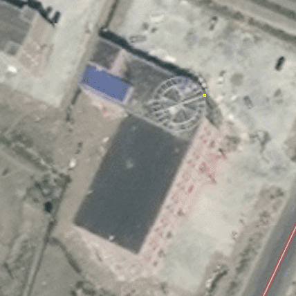
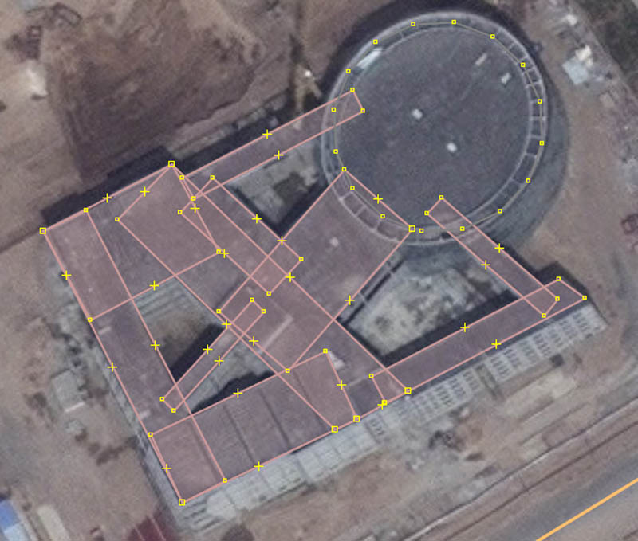

Basic JOSM tips
Some basic JOSM tips to speed up mapping.
(will be updated as I learn more myself)
Useful plugins
- Building Tools
- utilsplugin2
- FastDraw
(You get plugins by going to 'edit' - 'preferences', then click the power plug icon and there simply select the plugins you want.)
Invaluable shortcuts
A
Draw tool
S
Selection tool. Press 'S' twice to get a lasso selection tool.
ALT+A
Set tag. Simply press this after you finish drawing an object and you can quickly add tags to the selected object.
ALT+S
Edit selected tag (last changed tag). I use this a lot in combination with the building tools rectangle drawer. It allows me to draw neat rectangles very fast, also for objects that aren't buildings.
B
Building tools rectangle drawer
C
Combines line objects. Useful for combining roads.
P
Split objects. Useful for splitting roads at bridges or tunnels.
Select any number of nodes to split a way at these nodes. You can also split areas by selecting at least two nodes.
SHIFT+O
Make circle from diameter line
SHIFT+C
Makes an arc from an angle. Useful for drawing smooth road curves or complex building outlines.
Draw a very crudely drawn arc with only three nodes. A start point, a maximum 'bulge' point and an end point. The select the line and press the shortcut to make a smooth arc, similar to the circle tool.
CRTL+J
Join areas. Useful for drawing complex buildings that consist of overlapping geometries.
CRTL+SHIFT+N
This shortcut may be familiar... What is does in JOSM (only with utils2 plugin) is 'select all way nodes'. Indespensible for drawing power lines.
Select only the way, not the nodes, then press the shortcut. Now you can simply tag them all as power=tower for example. This method allows you to draw power lines with the same ease as roads.
Drawing buildings
Using the shortcuts mentioned above, some techniques can be applied that allow you to draw also complex buildings rather fast.



Note that if you join areas, any untagged areas will be treated the same as tagged areas. JOSM also automatically makes a multipolygon for you if the joined areas contain some void area in the center.
Another trick is to use the scaling tool (CTRL+ALT+mouse drag) creatively. To understand this, take a minute to test how the scaling tool works. It separates all selected points to or from the center. By selecting only part of the points of an area, you can make perfectly centered trapezoid shapes for example:
I also use it to make inner areas of the same shape as the outer area. To do so, copy the outer area and paste a copy exactly over the original area. Then simply scale it to a smaller size. As the centerpoint stays at the same spot, the distance between the areas will remain equal everywhere.
Bordering areas
There are two tools that save you a lot of time when working with areas that border each other.
The first is the 'split area' tool. It is included in utilsplugin2. Draw one way that is at the desired splitting of your area. Then select the area and the splitting way and press ALT+X. You'll now have two areas!
The second tool is the Follow Line tool. Conventionally you would need to go over each waypoint again to draw a new bordering area. The Follow Line tool automates this for you. First you do need to enable expert mode in the JOSM settings. Now the tool is available. Start by following at least two points, after that, press 'F' to let the tool follow subsequent points.
PicLayer
This plugin allows you to use any image as background tracing material. Very useful if you have obtained a (properly licensed!) map or aerial photo that you want to trace. For example, NASA often published very fresh satellite images of interesting area, which may be licenced for use in Openstreetmap.